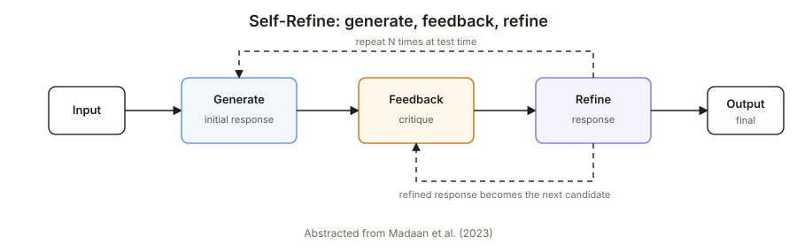
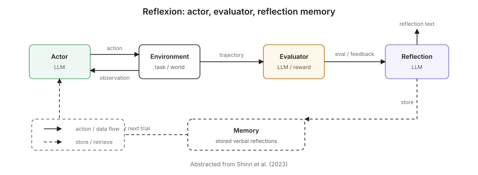
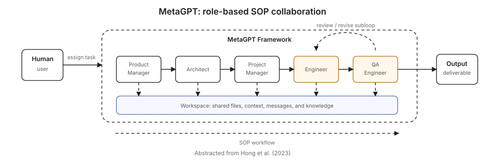

A tutorial on discovering reusable functional components in multi-agent systems, and turning them into building blocks.
If you've spent any time building LLM-based multi-agent systems, you've probably noticed a pattern: every new task means a new system. You design a new team of agents, write new role descriptions, wire up new communication protocols. The system you built last week for code review doesn't help much when this week's task is competitive analysis. The work doesn't transfer.
Look across well-known frameworks: MetaGPT, ChatDev, AgentVerse, Multi-Agent Debate, Self-Refine, Reflexion. The same impression holds: each one is a bespoke design for a particular task, with custom roles and custom interaction rules. They work, but they don't compose. You can't take a piece of MetaGPT and snap it into Reflexion. There is no shared vocabulary, no shared building blocks.
This is the problem we want to solve. The right analogy is how we write code: when the same logic shows up in five places, you don't copy-paste it five times. You extract it into a function, and every caller invokes the same function. Multi-agent systems should work the same way. When the same chunk of computation shows up across many systems, it should be extracted into a reusable function that any system can call.
We call these extracted functions primitives.
When we started looking carefully at existing multi-agent systems, something jumped out: even though every framework looked different on the surface, the same chunks of computation kept reappearing. Different papers, different domains, different agent names — but underneath, the same function was being implemented over and over.
Look at three influential frameworks from the last few years. They were proposed for completely different problems, and each draws its architecture differently in its paper.
Self-Refine (Madaan et al., 2023) uses a single LLM that generates an output, then critiques its own output, then refines it, iteratively.
Paper-style abstraction of iterative generation, feedback, and refinement.

Reflexion (Shinn et al., 2023) uses three models: an Actor that produces actions, an Evaluator that scores them, and a Self-Reflection module that turns the score into verbal feedback stored in memory and fed back to the Actor on the next trial.
Paper-style abstraction of action, evaluation, reflection, and memory.

MetaGPT (Hong et al., 2023) organizes five role agents (Product Manager, Architect, Project Manager, Engineer, QA Engineer) into a waterfall-style SOP for software development. Inside that pipeline, the Engineer writes code and the QA Engineer evaluates it, with revisions cycling between the two.
Paper-style abstraction of role-based SOP collaboration with a shared workspace.

Three different papers, three different domains (general reasoning, decision-making with environments, software engineering), three different figures. But if you strip away the domain-specific labels and look at what each system is actually doing, the same function shows up in all three: two roles, where one produces a candidate and the other provides feedback, looping until the result is good enough. Every one of these papers re-implemented this function from scratch with their own agent names and wiring.
The paper-specific diagrams collapse into the same producer–critic feedback shape.
In Self-Refine, the same LLM plays both roles. In Reflexion, the roles are spread across Actor and (Evaluator + Self-Reflection). In MetaGPT, it's the Engineer–QA subloop inside a bigger pipeline. The names and the surface details differ, but the underlying function is identical.
This is the core idea. When you see the same function being re-implemented across many systems, you should extract it once, give it a clean signature, and let everyone call it. That extracted, reusable function is a primitive.
This particular function — "produce a candidate, get feedback, refine" — is what we call the Review primitive. It's the first one we extracted, and the most reusable.
From the outside, the Review primitive looks like any other agent: you give it a task, you get back a refined output. The Solver–Critic loop is hidden inside. This is what makes primitives composable: you can drop a Review primitive into a larger system that also uses, say, a Voting primitive, and neither one needs to know anything about the other's internals.
A primitive is:
A primitive is not the same as an agent. An agent is one LLM call with one system prompt. A primitive may contain multiple agents working together, possibly in a loop. From the outside, you don't see those internals. You just call it.
Think of it like a library function in code. A sort function has a loop and comparisons inside it, but you don't think about those when you call it. You just sort.
When you design a primitive, three properties separate good designs from bad ones.
A primitive should correspond to one chunk of computation, the same way a well-designed function in code does one thing. Internally, a primitive can have multiple agents and multiple steps — the Review primitive is one primitive even though it contains two agents and a loop, just like a sort() function is one function even though it has loops and comparisons inside. What matters is that the whole thing has one purpose, and that purpose recurs across many systems.
If you find yourself describing a primitive as "it does X and also Y and also Z" where X, Y, and Z are different functions (not different steps inside one function), that's a sign you should split it into separate primitives. "Iterative refinement" is one function. "Refinement, then formatting, then emailing" is three.
The roles inside a primitive should describe what kind of agent (a critic, a synthesizer, a planner), not what specific content it handles. A "Python debugging primitive" is too narrow. A "produce-and-critique primitive" works for code, marketing copy, legal contracts, anything. Task-specific knowledge goes in the input, not the primitive.
Each agent inside the primitive should be:
If a primitive feels too big, split it. Two clear signs:
Now the practical part. The Review primitive came from looking at three existing systems and noticing they shared a structure. You can do the same thing in your own domain. Here's the process.
Don't start from abstractions. Start from systems that already work. They can be papers, open-source projects, or pipelines your own team has built. Draw each one out, with its agents and how they communicate.
Replace "Engineer," "Reviewer," "Brand Manager," "Lawyer," "Actor" with generic placeholders (Agent A, Agent B). Look at what's left: who produces, who evaluates, who decides, who synthesizes. Look for the shape of collaboration, not the names.
If two or three of your collected systems are implementing the same function under different labels, that's a candidate primitive — exactly the kind of duplication you'd want to extract in code. If a function appears in only one system, it's too specific and not yet ready to become a primitive.
List five or more different tasks where this function would apply. If you can't, the function probably isn't general enough yet to be worth extracting. The Review function, for example, applies to math problem solving, code review, writing refinement, translation quality improvement, brand consistency checking, legal contract refinement, and many more. That breadth is what makes it worth extracting once and reusing everywhere.
Strip the pattern down to the fewest agents that still work. For each agent, write down: what is its job, what information does it receive, what does it produce, and what should it explicitly not do?
For Review, the minimum is two agents (Solver and Critic). One agent works in Self-Refine, but research has shown an agent often can't objectively evaluate its own output, so two is more robust. Three or more would be redundant.
Let's actually build the Review primitive in code so you can see how the abstract design maps to running software. The implementation below uses plain text communication between agents (no KV cache or other advanced mechanisms; that level of optimization is orthogonal to the design of the primitive itself).
You need Python and an LLM API. We'll use the OpenAI API here, but any provider works.
pip install openai
export OPENAI_API_KEY="your-key-here"An agent is just a system prompt plus a way to call the LLM:
from openai import OpenAI
client = OpenAI()
class Agent:
def __init__(self, system_prompt, model="gpt-4o-mini"):
self.system_prompt = system_prompt
self.model = model
def run(self, user_message):
response = client.chat.completions.create(
model=self.model,
messages=[
{"role": "system", "content": self.system_prompt},
{"role": "user", "content": user_message},
],
)
return response.choices[0].message.contentThat's it. Agents communicate by passing text to each other.
class ReviewPrimitive:
"""
Iterative refinement through critique.
Use whenever output quality benefits from a second pair of eyes.
"""
SOLVER_PROMPT = """
You are a Solver within a Review Primitive.
Your role is to produce a solution to the given task, or to revise a prior
solution based on critique. Focus on substance and correctness.
If you receive a critique, address each point specifically.
Output only your solution, with no preamble or meta-commentary.
"""
CRITIC_PROMPT = """
You are a Critic within a Review Primitive.
Your role is to evaluate a candidate solution and identify specific, actionable
issues: factual errors, missing requirements, unclear reasoning, weak claims.
Do not rewrite the solution yourself.
Provide structured feedback as a numbered list of issues.
If the solution has no significant issues, respond with exactly: "NO ISSUES".
"""
def __init__(self, max_iterations=2):
self.solver = Agent(system_prompt=self.SOLVER_PROMPT)
self.critic = Agent(system_prompt=self.CRITIC_PROMPT)
self.max_iterations = max_iterations
def run(self, task):
solution = self.solver.run(f"Task:\n{task}")
for _ in range(self.max_iterations):
critique = self.critic.run(
f"Task:\n{task}\n\nCandidate solution:\n{solution}"
)
if "NO ISSUES" in critique:
break
solution = self.solver.run(
f"Task:\n{task}\n\n"
f"Prior solution:\n{solution}\n\n"
f"Critique to address:\n{critique}"
)
return solutionA few things worth noticing:
review = ReviewPrimitive(max_iterations=2)
result = review.run("Write a 3-sentence product description for a noise-canceling water bottle.")
print(result)This is the most important step. Run the same primitive on tasks from completely different domains:
tasks = [
"Write a 3-sentence product description for a noise-canceling water bottle.",
"Explain recursion to a 10-year-old in under 100 words.",
"Draft an apology email to a customer whose package was delayed by 2 weeks.",
"Write a Python function that returns the n-th Fibonacci number.",
]
for t in tasks:
print("---")
print(t)
print(review.run(t))If the primitive works on all four without modification, the design is general. If it only works for one, the prompts are too task-specific. Revise them.
Once you have a few well-designed primitives, complex tasks are handled by composing them rather than building larger primitives. A research workflow might compose an Extraction primitive (to pull facts from sources), a Synthesis primitive (to combine them), and a Review primitive (to check the result). Each primitive stays simple. The complexity lives in the composition.
This is the foundation for the future we want to build toward: a small library of reusable primitives, combined in different ways for different problems, rather than custom agent teams built from scratch for every task.
Build one, ship it, and the next person to tackle a similar problem will thank you.